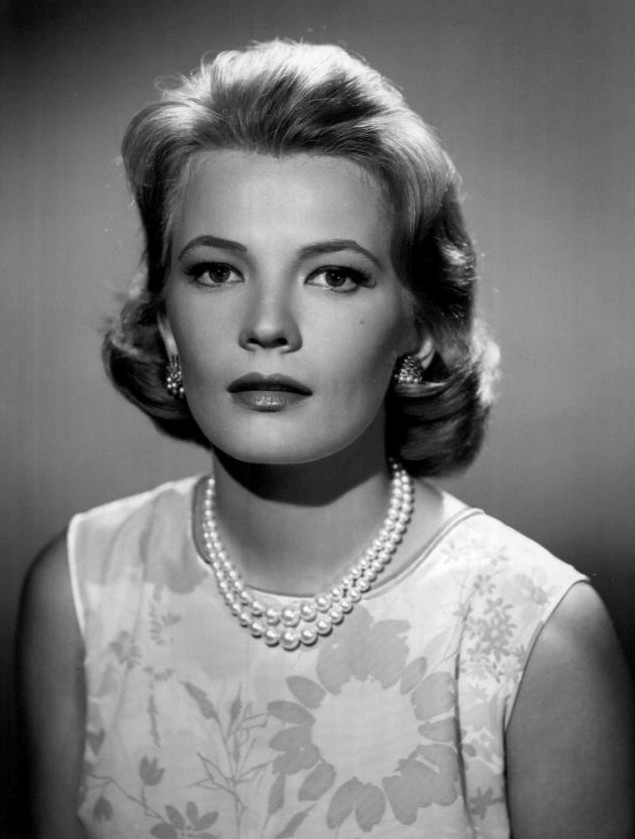
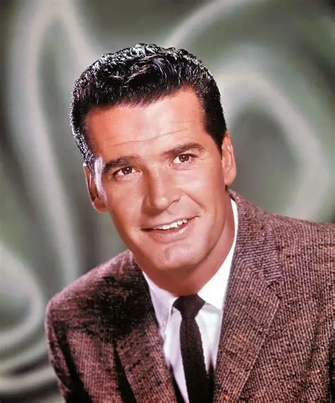
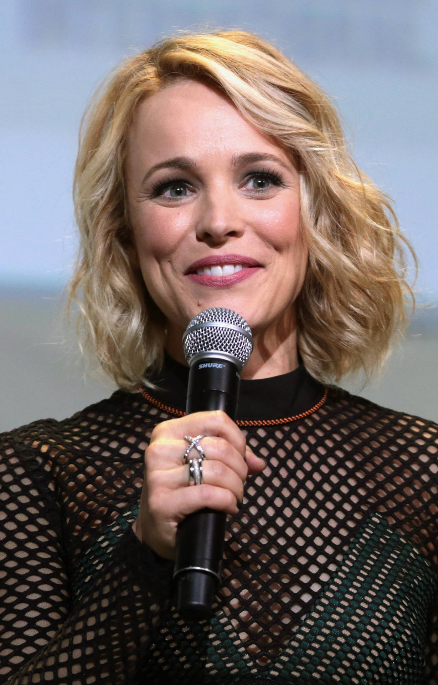
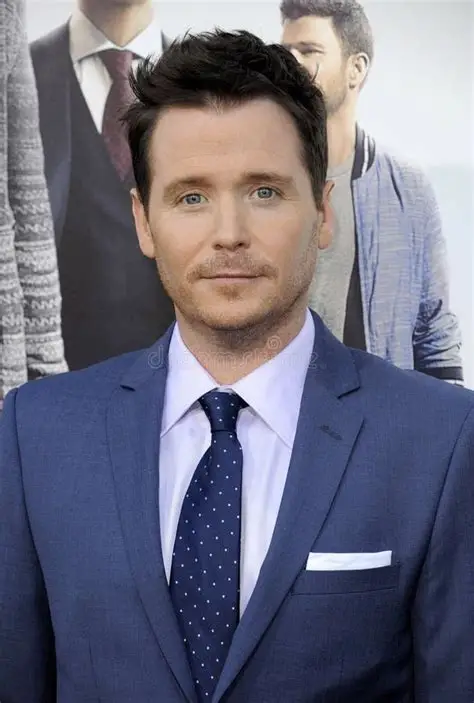

Elenco
Gena Rowlands
Allie Calhoun
Atora que representa a mãe de Allie.
Uma mulher exigente e que não aceita a opinião da sua filha, por ela ter tido um passado parecido
James Garner
Duke
Ator que representa o pai de Allie
ele tambem não aceita, mas não exige muito dela. No filme ele é um cara calmo mas as vezes estressado
Rachel McAdams
Allie
Allie a protagonista.
Uma menina sensivel, estressada mas com um coração enorme
Ryan Gosling

Noah
O namorado de Allie
ele insiste na sua futura namorada custe o que custar
Kevin Connolly
Fin
Melhor amigo de Fin
ele ajuda o amigo a conquistar a mulher dos sonhos